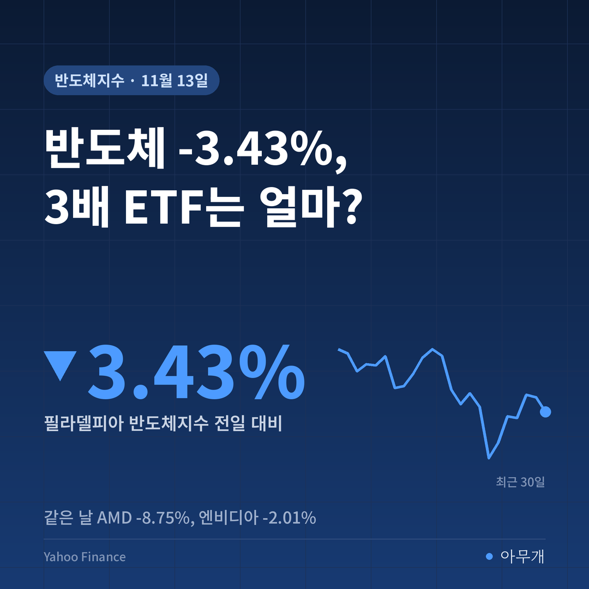
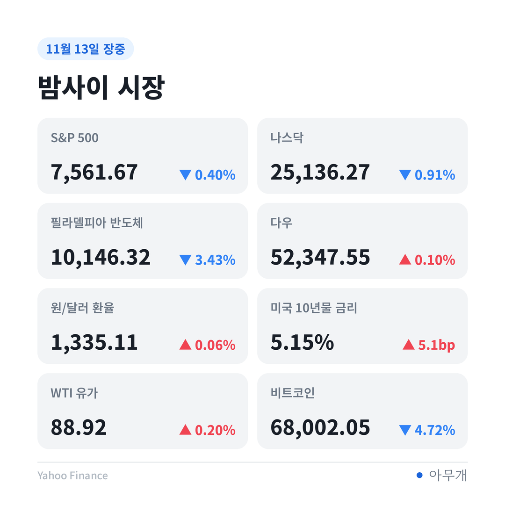
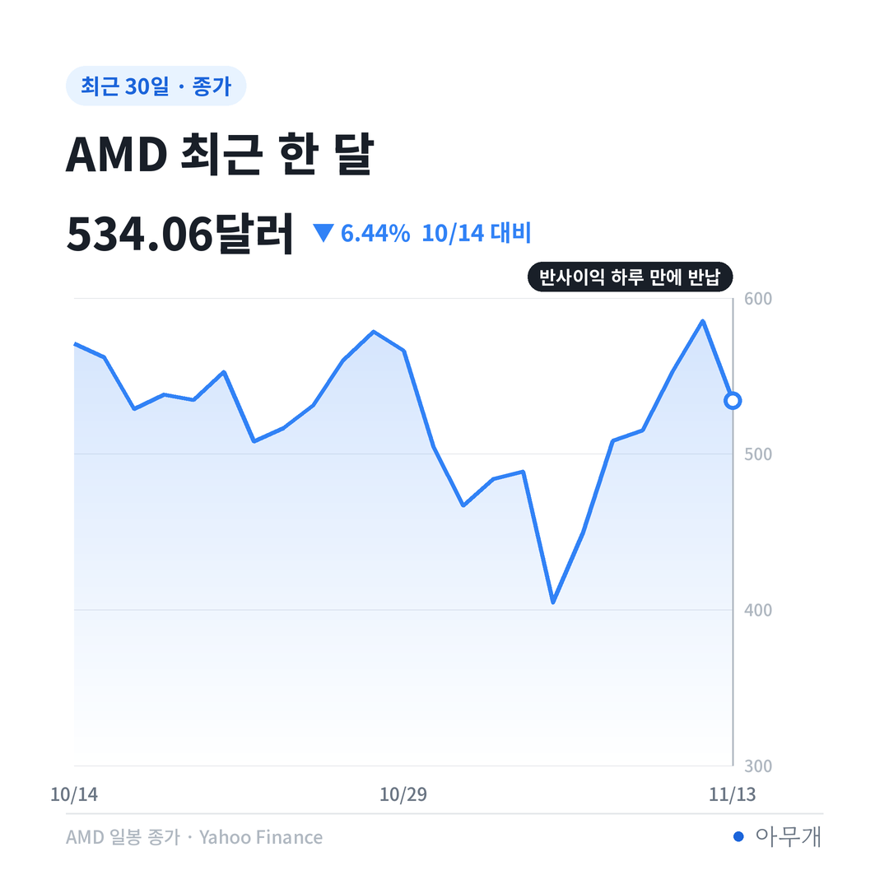
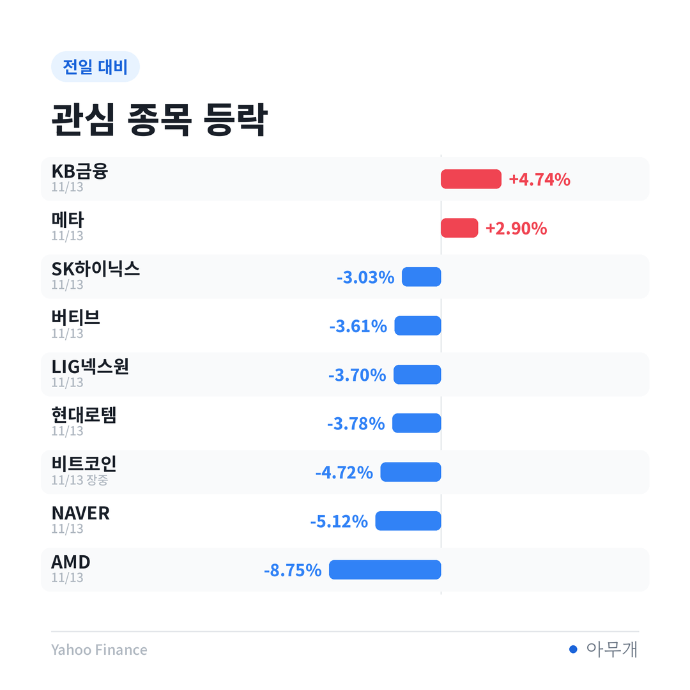

📷 사진 1 자리
숫자부터 맞춰 보면
젠슨 황 전 CEO 사태가 이어진 한 주, 국내 투자자는 엔비디아를 7,948만 달러(약 1,061억원) 순매수했어요[1][2]. 미국 상장 종목 가운데 5번째 규모예요[1]. 같은 기간 1위는 SOXL로 5억8,313만 달러(약 7,791억원), 2위는 나스닥100 3배 ETF인 TQQQ였어요[1].
엔비디아를 직접 사기보다 반도체 전체에 3배로 건 돈이 7배 넘게 많았다는 얘기예요. 한국예탁결제원 세이브로의 조회일 기준 집계라, 실제 매매일은 며칠 앞설 수 있어요[1].
| 날짜(현지) | 일어난 일 |
|---|---|
| 11월 8일 | 황 전 CEO, 중국 정보기관 연계 의혹을 받는 인물과의 관계 시인, 이사회 조사 착수[1] |
| 11월 12일 | 황 전 CEO 사임. 엔비디아 -4.34%, AMD +5.86%, 브로드컴 +5.54%[4] |
| 11월 13일 | 엔비디아 -2.01%, AMD -8.75%, 브로드컴 -4.76%, 필라델피아 반도체지수 -3.43%[3] |
| 11월 13일 | 엔비디아 이사회 "헤드헌팅 업체 선정 중, 어떤 후보와도 공식 접촉 안 해"[7] |
CEO가 갑자기 바뀐 회사의 주가가 늘 같은 길을 간 것은 아니에요. 2011년 애플은 승계가 계획대로 이뤄져 주가가 빨리 회복했지만, 2018년 인텔은 후임 인선이 늦어지면서 1년 뒤 주가가 8% 낮았어요[4]. 이번엔 수출 통제라는 정치 변수가 겹쳐 단순 비교가 어렵다는 지적도 같이 나왔어요[4].
확인된 것과 아직 의혹인 것
| 구분 | 내용 |
|---|---|
| ✅ 사실 | 상원 은행위원장이 황 전 CEO와 러트닉 상무장관에게 12월 출석 요구, 러트닉 장관은 자진 출석 의사[6] |
| ✅ 사실 | 하원 외교위원장 "황 전 CEO가 의회 증언에 응하기로", 추수감사절(26일) 전 비공개 증언 예정[5][6] |
| ⚠️ 의혹 | 앨리스 황의 중국 정보기관 연계, 메가스피드를 통한 칩 중국 반출 (조선일보·CNBC가 의혹으로 전함, 확인 안 됨)[5][6] |
| 🗣️ 전망 | 상원 국방수권법에 담긴 대중 반도체 규제 3법(AI 오버워치법·칩보안법·매치법)에 속도가 붙을 것이라는 관측[5] |
하루 만에 뒤집힌 반사이익
13일 뉴욕은 지수끼리도 엇갈렸어요. 다우는 +0.10%로 올랐지만 나스닥 -0.91%, 반도체지수는 -3.43%였어요.
📷 사진 2 자리
AMD는 6일 449.04달러에서 12일 585.30달러까지 4거래일 만에 30.34% 올랐어요. '엔비디아가 흔들리면 경쟁사가 수혜'라는 기대였는데, 13일 하루에 534.06달러로 내려왔어요[4][3]. 그래도 1주 기준으로는 +18.93%라, 오른 만큼 크게 되돌린 셈이에요.
📷 사진 3 자리
같은 날 코어위브 -6.13%, 네비우스 -9.92% 같은 AI 클라우드 기업과 SK하이닉스 ADR(-4.30%)도 같이 밀렸어요[3]. 반대로 AI 인프라 경쟁에서 떨어져 있는 애플은 장중 사상 최고가를 새로 썼어요[3]. 엔비디아 한 종목 문제가 아니라 'AI 반도체 전체에 붙은 정치 위험'으로 시장이 보기 시작했다는 해석이 가능해요.
금리도 거들었어요. 10월 생산자물가(PPI)는 전월 대비 0.3%로 예상(0.4%)보다 낮았지만, 전년 대비 6.5%로 2022년 11월 이후 가장 높았어요[3]. 미국 10년물 금리는 5.154%로 하루 +5.1bp, 1주 +29.5bp 올랐어요. 금리가 오르는 주에는 앞으로 벌 돈을 당겨 와서 평가받는 성장주가 먼저 흔들려요.
3배 상품의 닷새
SOXL은 반도체지수의 '하루' 등락을 3배로 따라가요. 그래서 1주 수익률을 3배로 곱하는 게 아니라, 매일의 3배를 이어 붙여야 해요. 반도체지수 종가로 직접 계산해 보면 이렇습니다(보수·환율 제외).
| 날짜 | 반도체지수 종가 | 하루 등락 | 3배 하루 | 6일부터 누적(3배) |
|---|---|---|---|---|
| 11월 6일 | 9,390.25 | - | - | - |
| 11월 9일 | 10,033.93 | +6.85% | +20.56% | +20.56% |
| 11월 10일 | 9,998.33 | -0.35% | -1.06% | +19.28% |
| 11월 11일 | 10,564.11 | +5.66% | +16.97% | +39.53% |
| 11월 12일 | 10,506.67 | -0.54% | -1.63% | +37.25% |
| 11월 13일 | 10,146.32 | -3.43% | -10.29% | +23.13% |
6일에 산 사람은 지수 +8.05%에 3배 상품으로 약 +23.13%, 아직 이익이에요. 문제는 산 시점이에요. 지수가 가장 높았던 11일 종가에 샀다면 지수는 이틀간 -3.95%인데, 3배 상품은 약 -11.75%가 돼요.
내 계좌로 옮겨 보면
엔비디아를 직접 산 경우도 원화로 따져 볼 만해요. 엔비디아는 1주 -12.75%였고, 같은 기간 원/달러 환율은 -1.57%(14일 오전 장중 기준) 내려 원화 가치가 올랐어요. 둘을 합치면 원화 기준 손실은 약 -14.12%로 더 커져요. 달러 자산은 환율이 내리는 주에 손실이 한 겹 더 붙어요.
국내에서도 빚을 낸 매매의 정리가 늘었어요. 같은 주 위탁매매 미수금 반대매매는 1,345억원으로 전주 365억원의 3.7배였어요[1]. 반대로 신용거래융자 잔고는 25조7,729억원으로 지난해 10월 31일 이후 가장 적었어요[1].
국내 반도체주는 13일 이미 한 번 흔들렸어요. SK하이닉스 1,216,000원(-3.03%), 삼성전자 206,000원(-0.96%), 한미반도체 181,700원(-0.11%)으로 닫았는데, 그 뒤 밤사이 하이닉스 ADR이 -4.30%였다는 점이 월요일 출발선이에요[3].
📷 사진 4 자리
다음 주 갈림길
| 시나리오 | 무엇을 보면 되나 | 예상되는 영향 |
|---|---|---|
| 실적이 불안을 덮는 경우 | 엔비디아 3분기 실적(한국 18일)에서 수요 전망·차세대 GPU 일정 유지[4] | 반도체지수 반등, 3배 상품은 그 폭이 커짐 |
| 규제가 앞서는 경우 | 대중 반도체 규제 3법 처리, 상무부의 수출 제한 국가 확대[5] | AMD·브로드컴까지 같이 약세, 국내 HBM 기대도 조정 |
| 금리가 주인공인 경우 | 18일 20년물 국채 입찰, 10년물 5.1% 위 유지 | 성장주 전반 부담, 원/달러 방향에 따라 서학개미 원화 수익률도 흔들림 |
이번 주 숫자에서 가장 눈에 띈 건 엔비디아 1천억원보다 SOXL 7,791억원이었어요[1]. 사건이 한 회사에서 업종 전체의 규제 문제로 번지는 국면에서, 하루 등락을 3배로 받는 상품은 방향이 맞아도 순서가 틀리면 손실이 커져요. 그래서 이 상품은 '무엇을 사느냐'보다 '며칠 들고 있느냐'가 수익률을 가르는 것 같아요.
✍️ 직접 보거나 들은 경험이 있으면 위 문단에 한두 줄 덧붙이세요 (이 안내 줄은 지우기)
반대로 보면, 6일에 들어간 사람은 이 흔들림 뒤에도 약 +23%라는 계산이 나와요. 레버리지 ETF는 원래 짧게 사고파는 사람이 쓰는 도구이고, 실적 발표라는 분명한 날짜가 앞에 있으니 단기 매매로서는 합리적인 선택이었다는 시각도 충분히 가능해요.
화요일 밤까지 볼 것
참고한 기사
이 글은 정보 제공 목적이며 투자 권유가 아닙니다. 투자 판단과 책임은 본인에게 있습니다.
수치 출처: Yahoo Finance(시장 숫자), TreasuryDirect(국채 입찰), 한국예탁결제원 세이브로(서학개미 순매수, 연합뉴스 인용)



